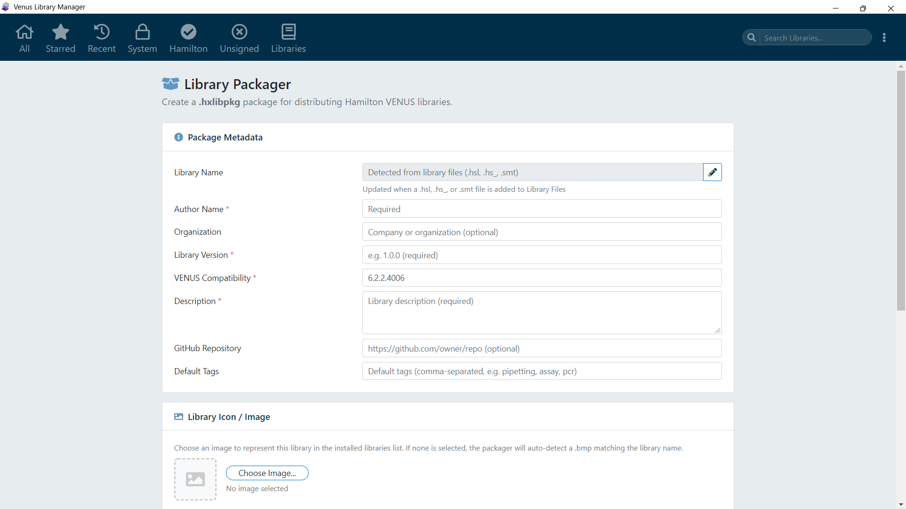
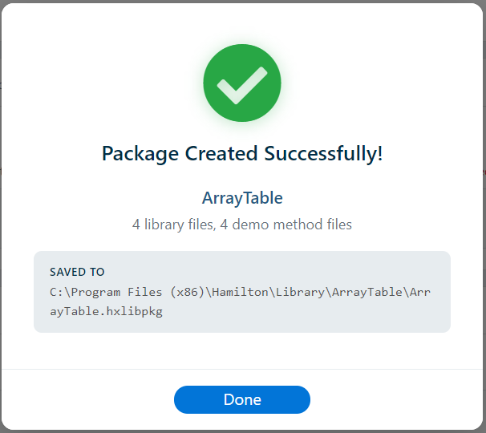

Overview
Library Manager for Venus 6 provides two ways to create a .hxlibpkg package from raw library source files: the GUI Library Packager and the CLI create-package command. Both produce identical output - a .hxlibpkg file in the binary container format, ready for distribution and import. The internal ZIP archive is automatically signed with an HMAC-SHA256 integrity signature (see Integrity Verification), and optionally code-signed with an Ed25519 digital signature and publisher certificate. The entire file is wrapped in a tamper-resistant binary container with its own HMAC-SHA256 digest.
GUI Library Packager

Step-by-Step
- Open the Library Packager from the application menu or toolbar
- Enter Metadata:
- Author (required) - Your name or team name
- Organization (optional) - Your company or institution
- Library Version (required) - A version string (e.g.,
1.0.0) - VENUS Compatibility (optional in GUI, required by CLI) - Target VENUS version range (e.g.,
4.7+) - Description (optional in GUI, required by CLI) - A human-readable summary of the library
- GitHub Repository (optional) - URL to the library's source repository on GitHub. Must be a valid
/{owner}/{repo}URL; see GitHub Repository Link for validation rules. - Tags (optional) - Searchable keywords. Note: Over 60 tag keywords are reserved (case-insensitive) and cannot be used, including
System,Hamilton,OEM, and laboratory automation company names. If entered, they are automatically removed and an error message is displayed. See Package Spec JSON Schema for the complete reserved list.
- Add Library Files: Add individual files or entire folders. Supported types include
.hsl,.hs_,.hsi,.smt,.stp,.sub,.dll,.bmp,.chm, and others. - Add Demo Method Files (optional): Add example methods that illustrate how to use the library. These are installed to a separate demo methods directory.
- Library Name Detection: The library name is auto-detected from your payload files using this priority order:
- The basename of the first
.hslfile - The basename of the first
.hs_file - The basename of the first
.smtfile
- The basename of the first
- Select Library Image (optional): Choose an icon or image file (
.png,.jpg,.jpeg,.bmp,.ico,.gif,.svg). If no image is selected, the packager looks for a.bmpfile among your library files whose name exactly matches the library name (e.g.,MyLibrary.bmpfor a library namedMyLibrary). Partial matches likeMyLibrary.extra.bmpare not considered. - Mark COM DLLs (optional): If your library includes
.dllfiles that need COM registration, select them individually from the payload list to mark them for COM registration. During import, the GUI will register these DLLs using the 32-bitRegAsm.exe /codebasewith UAC elevation. Note: Hamilton VENUS is a 32-bit application — only the 32-bit .NET FrameworkRegAsm.exeis used. See COM DLL Registration for details on the 32-bit requirement. - Build the Package: Choose a save location and build the
.hxlibpkgfile. - Code Sign (optional): If an Ed25519 key pair and publisher certificate have been configured in Settings → Code Signing, a Code Sign toggle is available. When enabled, the package is digitally signed with the configured Ed25519 private key and the publisher certificate is embedded in the
signature.json.

After a successful build, a success confirmation dialog is displayed showing the package output location and file details:

Package Icon Compositing
When the package is built, a composited icon is generated for the file-system representation of the .hxlibpkg file (the icon/ directory inside the ZIP). The manifest stores the raw, uncomposited library image so that imported libraries display your original artwork without any overlay:
- With a selected image: Your library image is drawn at full size, then a grayscale Library Manager logo is overlaid in the bottom-right corner at one-third of the image size. This composited version is used only as the Windows file-system icon for the
.hxlibpkgfile - similar to how Windows draws shortcut arrows on shortcut icons. - Without an image: If no image was selected or auto-detected, a full-size grayscale Library Manager logo is used as the file-system icon.
The compositing is performed using the HTML5 Canvas API at package build time. The grayscale logo is a pre-rendered static asset (assets/app_logo_gray_128.png). See Visual Identity & Assets for details on how assets are generated.
Protected Author Name
Certain restricted OEM and laboratory automation company names cannot be used as the author without authorization. If you enter a restricted company name (case-insensitive) as the author, a password prompt is displayed. You must enter the correct password before the package can be built. This prevents unauthorized attribution of packages to OEM vendors. See Library Grouping for more details about the OEM group and its protections.
Once imported, libraries with a restricted OEM author name display a blue verified badge  next to the author name across the application. This badge is rendered only when the package is code-signed with an Ed25519 certificate whose holder matches the OEM identity. See Integrity Verification for details on the OEM Verified Badge and Code Signing Certificate section.
next to the author name across the application. This badge is rendered only when the package is code-signed with an Ed25519 certificate whose holder matches the OEM identity. See Integrity Verification for details on the OEM Verified Badge and Code Signing Certificate section.
Packager Reset
The Library Packager includes a reset workflow to clear all staged metadata and files, returning to a clean state.
CLI: create-package
The CLI uses a JSON specification file to define all metadata and source file paths. This is ideal for automated builds and CI/CD pipelines.
node cli.js create-package --spec MyLib.spec.json --output MyLib.hxlibpkg
To code-sign the package with an Ed25519 publisher certificate:
node cli.js create-package --spec MyLib.spec.json --output MyLib.hxlibpkg --sign-key mykey.key.pem
See CLI: create-package for full command documentation and Package Spec JSON Schema for the specification file format.
Minimal Spec File
{
"author": "Jane Smith",
"version": "1.0.0",
"venus_compatibility": "4.7+",
"description": "A brief description of the library.",
"library_files": [
"MyLibrary.hsl",
"MyLibrary.hs_",
"MyLibrary.bmp"
]
}Full Spec File
{
"$schema": "./cli-schema.json",
"library_name": "MyVenusLibrary",
"author": "Jane Smith",
"organization": "Acme Pharma",
"version": "1.0.0",
"venus_compatibility": "4.7+",
"description": "High-level pipetting helpers for the ML600.",
"github_url": "https://github.com/acme-pharma/venus-ml600-helpers",
"tags": ["pipetting", "ML600", "syringe"],
"library_image": "MyVenusLibrary.png",
"library_files": [
"MyVenusLibrary.hsl",
"MyVenusLibrary.hs_",
"MyVenusLibrary.hsi",
"MyVenusLibrary.bmp"
],
"demo_method_files": [
"demo/Demo_MyVenusLibrary.hsl"
],
"help_files": ["MyVenusLibrary.chm"],
"com_register_dlls": []
}Note: All file paths in the spec are resolved relative to the directory containing the spec file. This makes specs portable across different machines and build environments.
Validation
The packaging process validates the following before building:
authoris present and non-emptyauthorlength must be between 3 and 29 charactersorganizationlength (if provided) must be between 3 and 29 charactersversionis present and non-emptyvenus_compatibilityis required (CLI only)descriptionis required (CLI only)library_filescontains at least one entry- All referenced files exist on disk at the resolved paths
- All referenced help files exist on disk
- COM DLL basenames match entries in
library_files - Restricted OEM author or organization names require password authorization
- Tags must not contain any of the 60+ reserved keywords (case-insensitive)
- Library name (explicit or auto-detected) must be valid (no path separators, reserved characters,
.., trailing dots/spaces)
If any validation fails, the build is aborted with a descriptive error message.
Output Structure
The resulting .hxlibpkg is a binary container file - not a plain ZIP archive. The container wraps an internal ZIP with the standard package structure described in Package Formats, including a signature.json entry with the integrity signature. If code signing was used, the signature includes an Ed25519 digital signature and embedded publisher certificate (v2.0 format); otherwise, HMAC-SHA256 only. The outer binary container adds a second integrity layer (container-level HMAC-SHA256) and XOR scrambling that prevents the file from being opened by standard archive tools. See Binary Container Format for full technical details.
Environment Stamping & Package Lineage
Every package created by Library Manager for Venus 6 is automatically stamped with environmental metadata:
- Application version (
app_version) — the version of Library Manager that built the package - Windows version (
windows_version) — the OS type, release, and architecture of the build machine - VENUS version (
venus_version) — the installed Hamilton VENUS version at build time - Package lineage (
package_lineage) — an initial"created"event recording the operator's username, hostname, and all environment details above
This enables full traceability of who created the package and on which system. When a package is later exported from another machine, an "exported" event is appended to the lineage — preserving the original creation context while adding the new export context. See Package Formats: Package Lineage for the complete lineage schema.
Package Portability & Forward Compatibility
Packages are designed to be portable across different machines, VENUS versions, and Library Manager versions:
- Version mismatch warnings: When importing a package created by a different version of Library Manager, the user is warned if the package's
app_versiondiffers from the running version. A stronger warning is shown when the package was created with a newer major version, as it may contain features not supported by the importer. - Forward-compatible field preservation: Any unrecognized fields in a package manifest are preserved during import into the database and carried through on export. This ensures that packages created by a newer version of the application do not lose metadata when processed by an older version.
- Lineage accumulation: Each export or repackage operation appends a new event to the lineage without modifying or removing prior events. A package can be traced through its entire lifecycle regardless of how many times it has been transferred between systems.
Audit Trail
Every package build is automatically recorded in the persistent audit trail (audit_trail.json). The entry captures the Windows username of the packager, the Windows OS version, the installed VENUS version, the computer hostname, and the package metadata (library name, version, author). This enables full traceability of who created each package and on which system. See Library Audit Log for details.